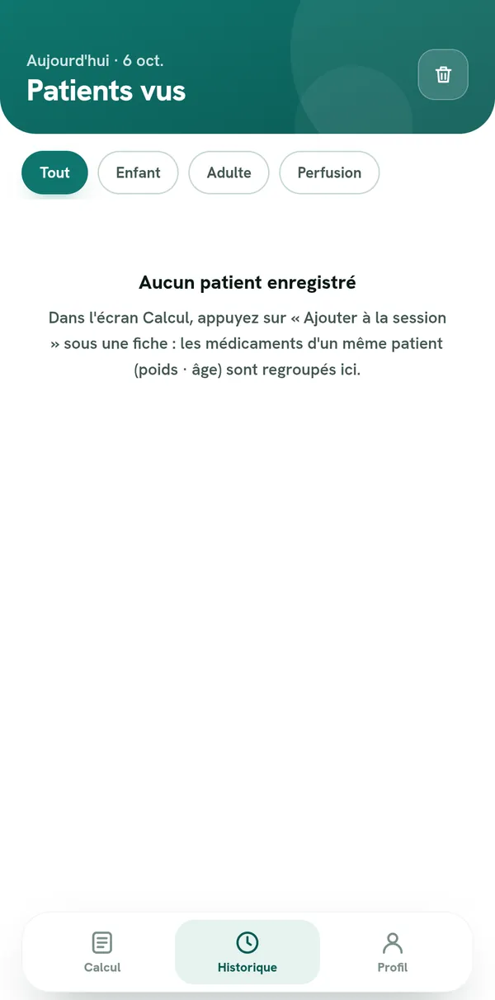
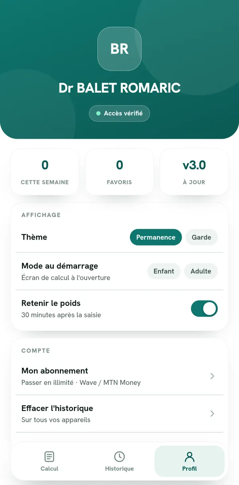

CR 01 — WEB ET ANDROID
NormoDose
Aide au calcul de posologie
Indication
Calcul des doses chez l'enfant selon le poids et chez l'adulte, avec adaptation aux situations particulières.
Technique
Grossesse, sujet âgé, insuffisance rénale ou hépatique, diabète, asthme. Médicaments d'urgence accessibles en permanence.
Conclusion
Historique et favoris, utilisable hors connexion.

